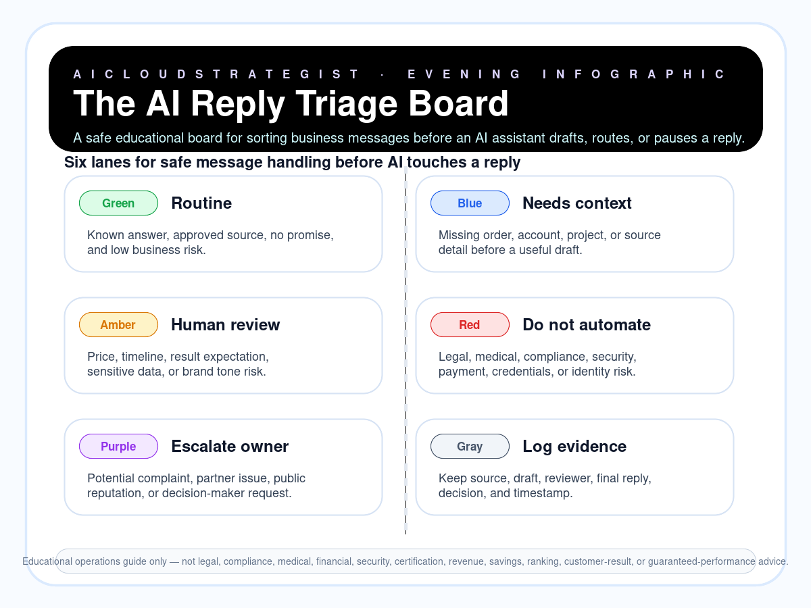

Evening publication · safe AI reply triage
The AI Reply Triage Board
A safe educational board for sorting business messages before an AI assistant drafts, routes, or pauses a reply.

Six triage lanes
- Green — Routine: Known answer, approved source, no promise, and low business risk.
- Blue — Needs context: Missing order, account, project, or source detail before a useful draft.
- Amber — Human review: Price, timeline, result expectation, sensitive data, or brand tone risk.
- Red — Do not automate: Legal, medical, compliance, security, payment, credentials, or identity risk.
- Purple — Escalate owner: Potential complaint, partner issue, public reputation, or decision-maker request.
- Gray — Log evidence: Keep source, draft, reviewer, final reply, decision, and timestamp.
Truth boundary
Educational operations guide only — not legal, compliance, medical, financial, security, certification, revenue, savings, ranking, customer-result, or guaranteed-performance advice.
Need help setting a safe AI reply process?
AICloudStrategist can review your current enquiry, WhatsApp, email, and owner-approval flow, then suggest a practical first control board for your team.
Request a free business review · WhatsApp AICloudStrategist · contact@aicloudstrategist.com